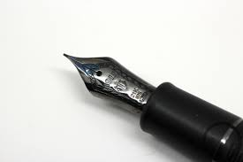

This is a page dedicated to those who would spend their nights putting pen to page - or finger to key
. It is for those who delight in the written word, marvel in its beauty, bask in its glory, and slumber in its embrace. It is for those who would prefer to spend their time with a blank page, a glass of wine [or tea, or whisk(e)y] and their thoughts. It is for both the verbose, and the concise. It is for the Writer.
"Be happy for this moment; this moment is your life." -Omar Khayyam